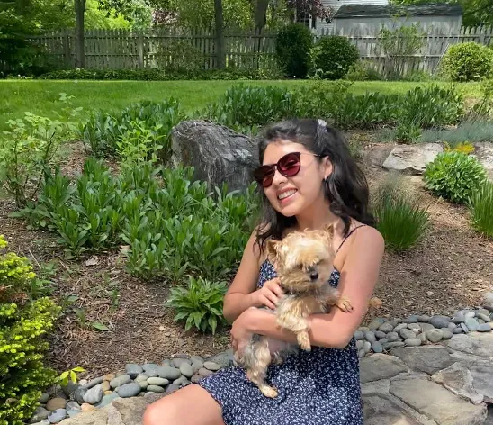
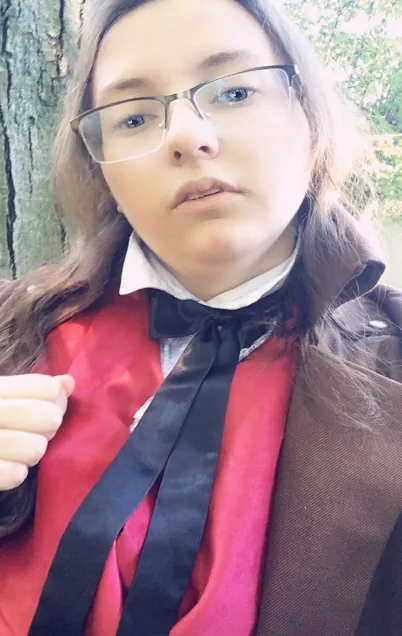

Abuchi Oguonu graduated from Rutgers University with a Bachelors in
Information Technology. He currently works as the lead for the Gaming/App team.
Outside of CHOYCES, he works as a Business Intelligence Consultant doing data
analytics. In his free time, he enjoys hanging out with friends and doing things
that get him out of the house such as hiking, sport, biking, etc.

Aria
Aria is the current lead for the recruitment department. She knew CHOYCES
mission was something she wanted to be a part of and has grown and learned
so much from it. Outside of CHOYCES Aria is a junior Rutgers University
majoring in management and minoring in psychology. She hopes to go into the
HR field once she graduates.

Aldin
Aldin is a 21-year-old graduate of Nassau Community College with an
Associate’s degree in Commercial Arts: Digital Technologies. He has several
years of experience as a freelance Graphic Designer, and was a summer Graphic
Design intern before taking on the job as a team lead. Outside of CHOYCES,
Aldin was a volunteer at the former Pets4Luv animal shelter, he loves animals
of all kinds, is an active and vocal advocate for Transgender, Gay, and Lesbian
equality, and draws upon his experience as a differently abled, Jewish, LGBT man
to further social change and growth. Aldin has also worked on activism for Autism
Spectrum Disorder in addition to his work for LGBT rights.